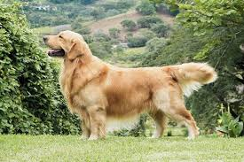
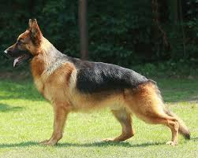
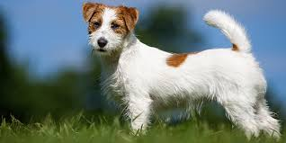
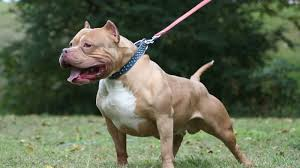
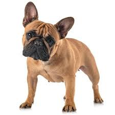

Elija una raza y le diremos su personalidad.
| Las 6 razas que no pasan desapercibidas en Argentina | |||
| Golden Retriever | Pomeranian | Pastor Alemán | |
|  |  | ||
| Jack Russel | Pitbull | Bulldog Francés | |
|  |  |  | |
Descripción de la raza: El ovejero alemán es una de las razas más inteligentes y versátiles. Fuerte, obediente y muy leal, es utilizado como perro de trabajo en fuerzas policiales, de rescate o tareas de protección. Requiere estimulación mental y física constante. Es protector con su familia y algo desconfiado con extraños.
Perfil del dueño: Generalmente es una persona disciplinada, con vocación de liderazgo. Le gustan los retos, la actividad física y valora el compañerismo y la lealtad. Muchas veces es alguien que trabaja en seguridad, deporte o tiene una personalidad organizada. No es raro que tenga experiencia previa con perros.
Descripción de la raza: Pequeño en tamaño pero gigante en energía. El Jack Russell es un torbellino de curiosidad y movimiento. Tiene un fuerte instinto cazador, es testarudo, pero extremadamente inteligente. Le encantan los juegos, los desafíos mentales y explorar.
Perfil del dueño: Una persona enérgica, activa, con ganas de vivir aventuras. Suelen ser jóvenes, deportistas o con espíritu libre. No les molesta el ruido o el caos, sino que lo disfrutan. Les atraen los animales con personalidad y no les asustan los desafíos.
Descripción de la raza: Físicamente poderoso y de apariencia imponente, el pitbull es en realidad un perro extremadamente sensible y afectuoso con las personas. Es muy leal, protector y necesita una guía firme. Con una crianza adecuada, es un perro sociable y equilibrado.
Perfil del dueño: Alguien comprometido, que valora la lealtad por encima de todo. Suelen ser personas decididas, seguras de sí mismas y con una fuerte conexión emocional con su mascota. También suelen ser defensores de causas sociales, ya que el pitbull es una raza muchas veces estigmatizada.
Descripción de la raza: Este pequeño y robusto compañero es famoso por su carisma, orejas de murciélago y expresión divertida. Es tranquilo, afectuoso y le encanta estar en compañía. Ideal para departamentos o espacios pequeños, se adapta fácilmente a la vida urbana.
Perfil del dueño: Dueño con estilo, sociable, con vida activa pero urbana. Tal vez trabaja desde casa o disfruta de cafeterías, parques y lugares pet-friendly. Es alguien que busca un perro compañero, más que un atleta, y valora mucho la conexión emocional.
Descripción de la raza: Aunque pesa apenas unos kilos, el pomeranian tiene una personalidad dominante y extrovertida. Su pelaje esponjoso lo hace parecer un peluche viviente. Es alerta, vocal y le encanta estar en el centro de atención.
Perfil del dueño: Dueños detallistas, creativos, posiblemente amantes de la moda, el diseño o las redes sociales. Suelen ser personas expresivas, que disfrutan mostrar a su mascota y dedicarle tiempo. Ideal para quienes buscan una mascota con actitud y estilo.
Descripción de la raza: El golden retriever es el clásico perro de familia. Dulce, amigable y paciente, se lleva bien con niños, otros animales y hasta desconocidos. Aprende rápido, le encanta jugar y necesita mucha interacción con su entorno.
Perfil del dueño: Persona empática, social, paciente. Puede ser parte de una familia, una pareja joven o alguien que ama la vida al aire libre. Suele disfrutar de actividades como caminatas, picnic o tiempo en familia. Busca una mascota equilibrada, afectiva y fácil de tratar.